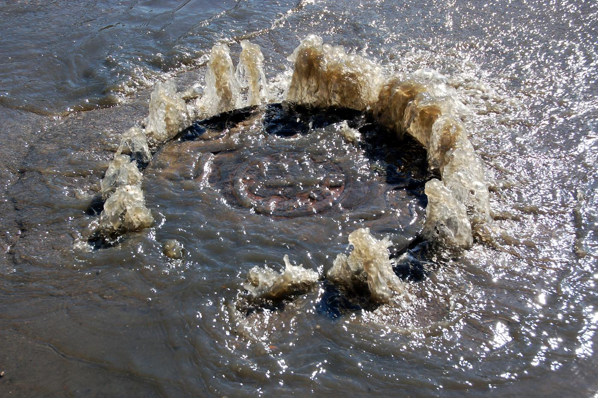
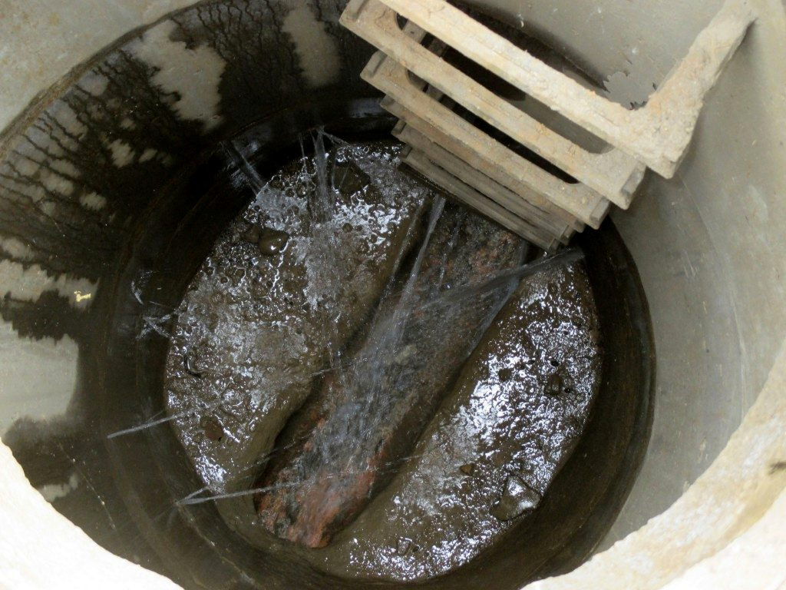
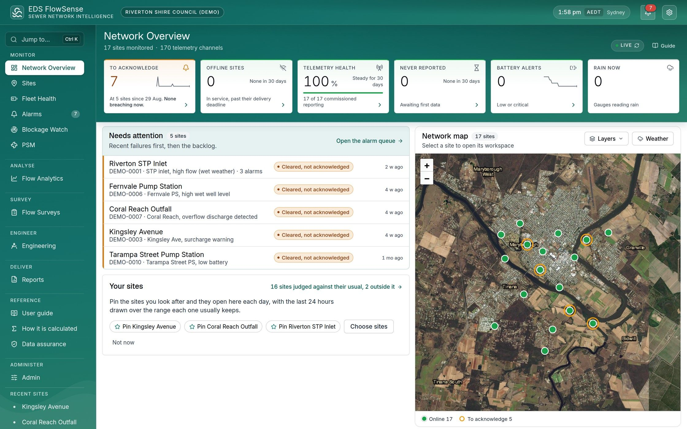

Dual-mode sewer flow meter
E-Flow 3
Non-contact radar in normal flow. Doppler ultrasonic and pressure in surcharge. Seamless switching, so the record never stops.

E-Flow 3 is an area velocity flow meter built for sewers and the worst they can throw at it. Four sensors share one body at the top of the pipe (the obvert): non-contact radar for normal flow, and Doppler ultrasonic with a pressure depth sensor for surcharge.
In normal flow the radars measure from above the water, so there’s nothing in the flow for grease, rag and silt to foul. When the sewer surcharges, the ultrasonic and pressure pair takes over on its own, then hands back as the level drops. One sensor, one continuous record, from dry weather to full surcharge.
That’s why E-Flow 3 needs less maintenance than any other type of open channel flow meter, while keeping unmatched accuracy. And it keeps measuring through the storms that matter most, just when a wetted sensor is most likely to be fouled.
Four sensors, one body
Normal flow: non-contact radar
- Velocity radar, 24 GHzBehind the sloping face, aimed upstream at the approaching surface
- Depth radar, 120 GHzIn the dome, looking straight down at the water
Surcharge: ultrasonic and pressure
- Dual Doppler ultrasonic, 1 MHzOn the angled front of the nose, in the water only when the pipe runs full
- Pressure transducer, 316 stainlessSealed port beneath the nose, reading depth to 10 m
Above the surface by radar.
Below it by ultrasonic and pressure.
Each pair does what it’s best at. Radar reads the flow from above whenever there’s a free surface. When the pipe runs full, ultrasonic and pressure measure through the water instead. The record never stops.
Illustration of E-Flow 3 at the top of a sewer pipe beside a manhole, in two conditions. In normal flow the pipe is partly full. One radar beam reaches the surface upstream for velocity, another reaches straight down for depth, and arrows show the velocity through the depth and its mean. In surcharge the pipe is full and water has risen up the manhole. An ultrasonic beam reaches into the water for velocity, the pressure transducer reads depth, and the radar stands by.
Normal flow: non-contact radarNothing touches the water
- 24 GHz Doppler radar reads surface velocity, corrected to mean velocity through the depth
- 120 GHz radar reads depth from above the flow
Surcharge: Doppler ultrasonic and pressureMeasuring through the full water column
- Dual 1 MHz Doppler ultrasonic reads velocity from particles carried in the flow
- Sealed 316 stainless pressure transducer reads depth, to 10 m of surcharge
- Radar beam
- Ultrasonic beam
- Velocity through the depth
- Mean velocity
Fill the pipe. Watch it change over.
Drag the water level, or play a storm. E-Flow 3 checks all four sensors every cycle and hands over as the pipe fills and drains, with no blind zone.
The recordRadar Ultrasonic and pressure
- Velocity radar24 GHzStanding by
- Depth radar120 GHzStanding by
- Doppler ultrasonicDual 1 MHzStanding by
- Pressure316 stainlessStanding by
Velocity signalRadar
An illustration of how E-Flow 3 changes over, in a 600 mm sewer. Not to scale, and not live data.
Other flow meters do half the job.
E-Flow 3 does both.
A radar alone loses its reading the moment the pipe surcharges. A wetted sensor on the bottom of the pipe keeps measuring, but fouls with rag and grease, and drifts. E-Flow 3 uses each technology where it works best and switches seamlessly. That makes it better than any other sewer flow meter on the market.
Illustration of one storm recorded by three kinds of flow meter. Each row shows the flow that actually passed as a dashed line, with the time the pipe ran full shaded. A non-contact radar alone records the flow until the pipe surcharges, then has a gap until the surface returns. A wetted sensor on the invert records through the surcharge, but its reading drifts low as rag and grease build up. E-Flow 3 records the whole storm, by radar before and after the surcharge and by ultrasonic and pressure through it, with no gap.
Non-contact radar aloneA gap when the pipe runs full
Wetted sensor on the invertDrifts as rag and grease build up
E-Flow 3The whole storm, with no gap
- What actually flowed
- Pipe running full
- Recorded by radar
- Recorded by ultrasonic and pressure
- Recorded by a wetted sensor
| What it does | Radar alone | Wetted sensor on the invert | E-Flow 3 |
|---|---|---|---|
| Measures without touching the flow | Yes | No | Yes |
| Keeps measuring when the pipe runs full | No | Yes | Yes |
| Nothing on the invert for rag and grease to foul | Yes | No | Yes |
| One continuous record through a storm | No | Until it fouls | Yes |
Unmatched accuracy, from the surface down.
Flow is only as good as its velocity and area. E-Flow 3 reads surface velocity and corrects it to mean velocity through the depth. It measures depth to 1 mm resolution and works out the wetted area from the pipe profile. Then it calculates flow in the sensor itself.
Illustration in two parts. Along the pipe, E-Flow 3's velocity radar reads the water surface, and arrows show velocity through the depth, fastest near the surface and slowing to nothing at the bed. A dashed line marks the mean, and the depth radar measures the depth. Across the pipe, the wetted area below the surface is shaded by velocity, lighter where the water moves faster, with the depth marked.
Velocity: from the surface through the depthWhat the radar reads, and the mean it gives
Area: from depth and the pipe profileThe wetted cross-section, shaded by velocity
- Radar beam
- Velocity through the depth
- Mean velocity
The figures, from dry weather to full surcharge
- 1 %of reading, ultrasonic velocity± 0.005 m/s
- 2 %of reading, radar velocity± 0.01 m/s
- 0.2 %of full scale, depth± 0.001 m
- 1 mmdepth resolutionand 0.001 m/s velocity
- 0.05 to 20 m/svelocity rangerecommended above 0.2 m/s
- 0 to 10 mdepth rangeincluding surcharge
Less maintenance than any other open channel flow meter.
Most open channel flow meters sit on the bottom of the pipe (the invert), in the path of everything the sewer carries. E-Flow 3 sits at the top, and only touches the water when the pipe runs full. So there’s far less to clean, with no loss of accuracy.
Illustration of two sewer pipes in section. In the first, a conventional flow sensor sits on the invert, and rag, grease and silt carried by the flow have built up around it. In the second, E-Flow 3 sits at the obvert above the water, reading the surface by radar, while the same solids pass beneath it.
A conventional sensor on the invertIn the path of everything the sewer carries
E-Flow 3 at the obvertAbove the flow, and in the water only when the pipe runs full
- Rag, grease and silt
- Radar beam
- No cleaning visits in normal service
The radars have nothing in the water to foul, and the sealed body sheds material once a surcharge drains. Site visits become checks, not clean-outs.
- No confined space entry
Install, retrieve, commission and check it from the manhole opening, with EMS-Flow through the EDS logger.
- Check it from the office
Every sensor reports its own value and status over Modbus, so you can see which pair is active, and why, before anyone drives out.
Installed and commissioned from the surface.
No one enters the manhole. E-Flow 3 goes in from the opening and is set up from the surface. EDS crews install and commission it across Australia.
Four illustrations of one manhole, each adding the next part. First, E-Flow 3 is fitted at the top of the pipe from the manhole opening. Second, its cable is clipped up the shaft wall. Third, the logger hangs near the top of the shaft and reports over 4G. Fourth, a tablet at the surface commissions it through the logger.
1Fit the sensor at the crown
On an EDS bracket sized to the pipe, sensor face towards the incoming flow, from the manhole opening.
2Run the cable up the shaft
The integral cable is clipped to the shaft wall, its length specified to suit the manhole.
3Hang the logger near the top
The EDS logger powers and polls the sensor over RS485, and reports over 4G.
4Commission from the surface
Set up and verified with EMS-Flow through the logger, with no confined space entry.
Built for sewers and the harshest conditions.
Hydrogen sulphide, grease, rag, silt, temperature swings and the odd full surcharge. E-Flow 3 is built to sit in all of it for years and keep reporting.
- Hydrogen sulphide
- Grease
- Rag
- Silt
- Temperature swings
- Full surcharge


Illustration of E-Flow 3 seen through its housing as it hangs from the top of the pipe. It shows the stainless mounting bracket, the composite housing, the potted electronics, the radar windows with their beams reaching the water, the ultrasonic face and pressure port on the nose, and the cable leaving towards the manhole. Numbered markers match the list beneath.
- Obvert mounting sheds debris. Fixed to the pipe crown on an EDS bracket, out of the flow path, so material can’t build up on the sensor face.
- Tough composite housing. Alloy and engineering plastic composite that resists corrosion, impact and water.
- Fully potted, sealed for life. The electronics are fully potted and unaffected by temperature cycling.
- 316 stainless where it’s wet. A sealed 316 stainless steel pressure transducer reads depth to 10 m of surcharge.
- Sealed ultrasonic face. Dual 1 MHz transducers sealed into the face. The bidirectional E-Flow 3 B also reports reverse flow.
- Integral cable. Power and RS485 in one cable, sized to suit the manhole. Firmware updates run over it through an EDS logger.
Where E-Flow 3 fits.
Inflow and infiltration
Reliable wet weather velocity and depth through surcharge, the events that define an I&I program.
Network monitoring
Long-term flow at key points in reticulation and trunk sewers, with minimal site visits.
Overflow and surcharge
Capture the peak, the duration and, with the bidirectional model, any reverse flow.
Pump station and catchment
Inflow to wet wells and catchment boundaries, feeding capacity and growth planning.
From the manhole to your desk.
E-Flow 3 is part of one EDS system: the sensor, the Hawk logger in the manhole, 4G telemetry and FlowSense. One team looks after all of it, from the sensor to the report.
- E-Flow 3Velocity, depth, flow, temperature and diagnostics, in the manhole
 Hawk 4G loggerPowers and polls the sensor, stores every reading and reports over 4G
Hawk 4G loggerPowers and polls the sensor, stores every reading and reports over 4G
- Your teamEngineers, operators, hydraulic modellers and regulatory reporting
EMS-Flow commissions and verifies the sensor from the surface, through the logger.
Specifications
E-Flow 3 in detail.
Velocity
| Method | Non-contact 24 GHz radar in normal flow, dual 1 MHz contact ultrasonic in surcharge |
|---|---|
| Range | 0.05 to 20 m/s, recommended above 0.2 m/s |
| Accuracy | Ultrasonic 1 % of reading ± 0.005 m/s; radar 2 % of reading ± 0.01 m/s |
| Resolution | 0.001 m/s |
| Dead zone | Ultrasonic unidirectional 0 to 0.002 m/s, bidirectional ± 0.03 m/s; radar ± 0.05 m/s |
| Velocity radar | 24 GHz continuous wave Doppler, 24° × 12° antenna |
| Ultrasonic | Dual 1 MHz Doppler, 5° beam |
Depth
| Method | 120 GHz FMCW radar in normal flow, sealed pressure transducer in surcharge |
|---|---|
| Range | 0 to 10 m |
| Accuracy | 0.2 % of full scale ± 0.001 m |
| Resolution | 0.001 m |
| Depth radar | 120 GHz FMCW, 14° × 10° antenna |
| Pressure transducer | 316 stainless steel, sealed, with dynamic pressure compensation |
Electrical and communications
| Supply | 8 to 15 VDC, 12 VDC nominal |
|---|---|
| Current | 150 mA at 12 VDC |
| Interface | RS485, two-wire |
| Protocol | Modbus RTU slave, register map supplied |
| Response time | 10 s, with configurable damping |
| Firmware | Remote update over RS485 with an EDS logger |
| Configuration | EMS-Flow, from the surface through an EDS logger |
Mechanical and environmental
| Housing | Alloy and engineering plastic composite |
|---|---|
| Sealing | Electronics fully potted, unaffected by temperature cycling |
| Cable | Integral, length to suit the manhole |
| Mounting | Pipe obvert on an EDS bracket, sensor face upstream |
| Water temperature | 0 to 60 °C, accurate to 0.5 °C |
| Service | Sewage, trade waste and combined flows, permanent or temporary |
Ordering
| E-Flow 3 U | Unidirectional. Ultrasonic mode reports absolute velocity. |
|---|---|
| E-Flow 3 B | Bidirectional. Signed velocity and flow; identifies reverse flow and backing up. |
| Bracket | Obvert mounting bracket, sized to the pipe diameter |
| Cable | Integral, length specified at order |
Accuracy is stated under reference conditions. Radar velocity needs a free surface with enough texture to return a signal. Below 0.2 m/s the sensor prefers ultrasonic velocity where available. Specifications may change without notice. Full details are in the E-Flow 3 datasheet.
Put E-Flow 3 in your network.
Tell us the pipe size, the depth and what you need from the data. We’ll size the bracket and cable, recommend the logger and telemetry, and can install and commission it for you.